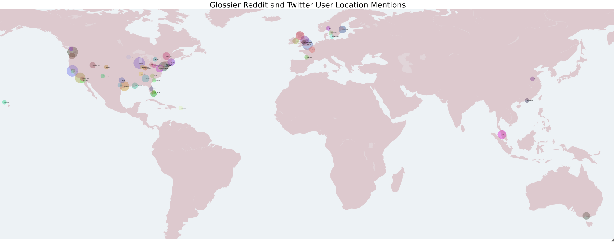

Natural Language Processing
Our executive objective is to determine the most optimal growth and marketing strategy for Glossier. Specifically, we assessed competitor behavior, product strategy, locations of interest, and related external factors. Through this preliminary research, we have identified three key products - limited edition products (le), protip, and generation g - that should be included in the newest product kits. This is because these products are both mentioned frequently and are almost always mentioned in a positive context (> 90%), as evident in Table 1 below. Amongst our direct competitors in the beauty industry, we have identified Sephora as the leader. As evident in Table 2, Sephora has the highest number of mentions amongst competitors and a 78% positive mention rate. As such, our Glossier market researchers will closely examine Sephora’s marketing, launch, and growth strategies to identify opportunities in our expansion plan.
We have also identified that interest in Glossier and the number of COVID-19 cases have a sequential relationship. Thus, we can leverage COVID-19 forecasts to predict when Glossier demand will increase and plan inventory accordingly. Additionally, we have identified low demand for Glossier products across U.S. and European cities from social media platforms and that physical store expansion cannot currently be assessed. Sustainability does not appear to be important for our customers when identifying brands they will shop at. As such, we have ample time to revamp those efforts without the risk of losing our customers. The details that bolster these findings and recommendations are described at length below.
Table 1: Overall Market Sentiment Of Top 10 Glossier Products
Table 2: Overall Market Sentiment Of Glossier Competitors
Analysis
The analysis conducted in this section is aimed at analyzing text data only. As such, not all business goals have been addressed and some business questions may only be addressed in part. Contrary to the previous EDA section, this analysis is structured by the business goal addressed.
Business Goal 1: Should Glossier focus on store expansion? If so,where should Glossier open their next store?
As Glossier continues to expand to in-store shopping options, our team wanted to explore where Glossier may find customer demand for a brick and mortar option. Due to limitations with geospatial NLP analysis, our technical proposal deviated from its initial structure. First, instead of parsing comments to identify where geospatial terms are mentioned, we added additional data sources. The first was a dataset that contained posts and comments related to Glossier. Second, we made a pull to the Twitter API to identify tweets mentioning @glossier and collected the text along with the geotagged locations from the user profile bios. Third, we used the Reddit API to get data from a separate subreddit that asked users where Glossier should open their next store. After joining these datasets, we were able to match the cities mentioned across posts and gather their coordinates via a geographical dataset from Geolite2. Second, instead of leveraging sentiment analysis to gauge Glossier popularity, our revised approach leveraged Glossier activity as a proxy for this demand.
Figure 1 displays the popularity of Glossier across multiple locations, where the bubbles indicate the number of times Glossier was mentioned in the corresponding city. Overall, we found that social media users requested stores in major cities across the US and Europe. Interestingly, some of these cities are those where Glossier has already created limited time pop-up stores. Many users are also based in the cities which already have stores, including both Seattle and Brooklyn. It is also worth mentioning that more general areas of interest include the Nordic countries (Sweden, Norway, Denmark) and Malaysia, suggesting widespread and international demand. Table 3 displays the top cities that have Glossier interest as a percentage of total demand. It suggests that new cities for expansion include San Francisco and Chicago. However, it is imperative to point out that the number of times cities were mentioned were extremely low overall and may be indicative that social media is not an accurate tactic of gauging demand.
Figure 1
Table 3: Top Cities With Glossier Interest
Business Goal 2: What products should be in the newest Glossier kit?
To address this, we first identified which products each Glossier comment and post contained. We developed a model to calculate the sentiment of each post and comment and assigned it to all of the products mentioned in that same post or comment. A ratio that represents the number of times a product was mentioned in a post or comment for each sentiment (positive, negative, or neutral) over the total number of times the product was mentioned was calculated. This technical proposal deviated from its initial structure slightly; instead of leveraging counts for the visuals, we leveraged percentages and instead of using a faceted chart, we used separate charts for each sentiment. The first modification was made because the percentage/ratio is a better indicator of true sentiment, aids with comparison across products, and is visually more appealing as all values are between 0-100. The second modification was made because our intent is to compare products within each sentiment group and not products across each sentiment; separate charts are more conducive for this objective.
The top 10 products with the highest ratio were identified for positive, negative, and neutral sentiments. From Figure 2 below and Table 1 above, it is evident that limited edition (le), protip, and generation g products should be in the newest Glossier kit as they have high positive sentiment when mentioned and are mentioned a large number of times. From Figure 3 below, it is evident that the after balm, roller ball, retinol, monochromes, and cleanser products should not be in the newest Glossier kit as they have high negative sentiment when mentioned. As a next step, we will explore some negative comments to understand why these products are associated with poorer sentiment and consider discontinuing them altogether.
Figure 2
Figure 3
Business Goal 3: Which products are most common amongst competitors (Sephora, Ulta, and Fenty)? Does this open up an opportunity to capitalize on market share?
This analysis pulled all Sephora, Ulta, and Fenty Reddit activity and performed NLP and sentiment analysis to determine market sentiment of Glossier competitors. The model assigned each post a positive, negative, or neutral sentiment value. We also searched posts for keywords based on general products sold at these stores to infer market sentiment of specific products. In knowing this, Glossier will be able to determine competitive market opportunities by product. Similar to above, this technical proposal deviated from its initial structure slightly; instead of leveraging counts for the visuals, we leveraged percentages and instead of using a faceted chart, we have one chart showing positive sentiment by product for each competitor. It is worth noting that the product list leveraged for this analysis deviated from the internal list used for Glossier, in order to better compare across brands. Thus, we will only compare products amongst competitors and not to Glossier. Figure 4 illustrates percent positive posts of general products by competitors. It is clear that Sephora product sentiment is much more positive than either Ulta or Fenty. Makeup products sold by Sephora are more positively regarded than skincare cleansers and perfume. Fenty overall sentiment by product is much less positive than Sephora or Ulta. As such, we consider Sephora the golden standard and will explore their business strategies to potentially adopt.
Figure 4
Business Goal 5: How has demand for Glossier been affected by COVID-19 rates? Can we get an understanding of what the relationship between the two may look like for the future?
Figure 5 shows the daily global new cases of COVID-19 overlaid with the daily Reddit activity relating to Glossier. Data on global COVID-19 cases and deaths from January 2021 to August 2022 was collected from the World Health Organization. Both the COVID-19 dataset and the Glossier dataset were aggregated by day and joined on day. In a future step, we will develop a multivariate time series ML model to forecast disease rates in conjunction with the demand using Glossier Reddit activity as a proxy for Glossier demand. The data was visualized in this step to show progress in collecting and incorporating external data and to aid in hypothesizing the outcome. One can see from the figure that there is clear seasonality in both COVID-19 new case rates as well as Glossier Reddit activity. They seem to peak and dip sequentially during this time period. Glossier activity seems to peak before the holidays and COVID-19 global cases spiked right after the holidays due to travel and social activity. We hypothesize that COVID-19 and Glossier demand are more related to the holidays than to each other.
Figure 5
Business Goal 6: What is the average persona of a Glossier customer? In other words, what does our consumer base look like?
The initial technical proposal focused on user demographics. However, because we do not have the real name of the user to assess gender nor a criterion to extract age from the text, we amended the question and technical proposal to focus on user behavior. For users who post in the Glossier, Ulta, Fenty, and Sephora subreddits, we will identify their total activity by joining other subreddits and counting the number of other subreddits these users post to. We will also get the average score of the posts for each user. We will then use NLP techniques to identify the sentiment score of each post. We will then average sentiment score, score, and activity for each brand to get glean what the average persona looks like across competitors. The output will be depicted via bar charts to contrast competitor information. Figure 6 allows us to see the Reddit average sentiment, score, and number of comments for each brand. It is clear that Glossier has the highest sentiment, number of comments, and average score. This is indicative that Glossier customers have a positive perception and are more interactive than the customers of competitive brands. It is also clear that the average sentiment for each user is similar across brands and there isn’t a lot of fluctuation, indicating customers feel similarly across brands.
Figure 6
Business Goal 9: Are Google trend searches predictive of daily user sentiment?
In order to get a more complete understanding of how Glossier compares to its competitors, we joined the reddit glossier and competitor datasets to Google trends data. The google trends data was limited to the same timeframe as the reddit data and was pulled via an API call for four make-up brands: Glossier, Sephora, Ulta and Fenty. After collecting the google trends data, we conducted exploratory data analysis and developed charts to compare the four brands in Figure 7. Figure 7 shows that Google search trend activity follows two different distribution shapes. Fenty and Glossier searches form a right skewed distribution, meaning that most search trends tend to hover around a specific number while Sephora and Ulta do not seem to have a clear peak. As a result, search trends for Glossier and Fenty seem to be consistent while searches for Sephora and Ulta vary quite a bit over time.
To calculate sentiment, we developed a sentiment model and assigned a category to each post. We then created our own dummy variables and assigned positive a score of 2, neutral a score of 1, and negative a score of 0. These scores were then averaged by day and brand. The google trends data was then joined to the aggregated datasets. The next step of this analysis will determine whether there is a correlation between normalized google searches and sentiment score via experimentation and statistical techniques.
Figure 7
Business Goal 10: Is sustainability on the top of Glossier customers minds? Should Glossier focus its efforts on making their products and practices more sustainable?
This question assessed Reddit user conversations surrounding Glossier. Specifically, we hoped to see if there were discussions about sustainability practices within the company. To delve into this, we gathered the r/Glossier subreddit posts and comments and cleaned that data by removing missing values, tokenizing, special characters, and stopwords (custom and from the nltk package). From this point, we created a corpus of the text and captured the term document frequency through bag of words. Finally, we used an LDA model to gather the words that belong to a topic via probabilities. We honed in on ten topics and created a visualization to view the 30 most frequently used terms within each one, as seen in Figure 8. As expected from prior analysis, most of the conversation focused on products as opposed to other potential topics like sustainability or store expansion. The LDA model separated conversations around products; for example, one topic seemed to focus on skin and skincare products while the other focused on Glossier’s blush range. Nearly all of the ten topics centered around products, but we did see one topic surrounding customer service or the concerns surrounding the company. As such, we identified that sustainability was not on the top of Glossier customers’ minds.